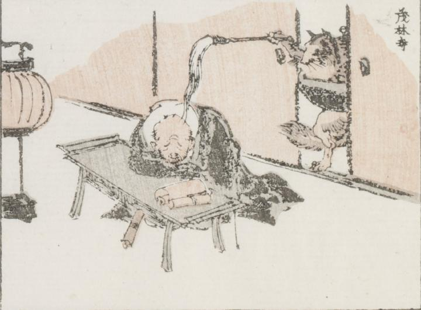

狸；タヌキ，文福茶釜；ブンブクチャガマ

胴を釜に挟まれた狸が、開いた襖から右手に持った払子を、居眠りする僧侶の顔に垂らしている。僧侶は巻物を置いた机にうつ伏して、眠っている。
著作者：牧墨僊／出典：親書誌：U426_nichibunken_0097：滑稽洒落狂画苑；コッケイシャレキョウガエン／日付：2007／資源識別子：U426_nichibunken_0097_0022_0000
Copyright (c)2010- International Research Center for Japanese Studies, Kyoto, Japan. All rights reserved.